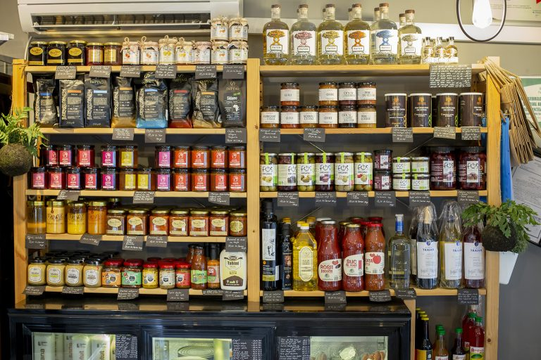

| Paine | Pret |
|---|---|
| Franzela | 2 Ron |
| Bagheta cu 5 seminte | 10 Ron |
| Paine feliata | 5 Ron |
| Ciabatta | 9,5 Ron |
| Pave Pufoasa | 11 Ron |
| Paine cu faina integrala | 12 Ron |
Pe langa produsele noastre proaspete, coapte zilnic in brutarie, avem si un loc special pentru delicatesurile de bacanie.
Pe raftul nostru de bacanie gasesti delicioase bunatati artizanale pentru camara ta. Branzeturi si lactate, uleiuri de masline si otet balsamic, zacusca artizanala, sosuri, miere naturala, dulceturi si gemuri, cafea, ceai, siropuri naturale, bauturi spirtoase, vin, bere artizanala si sucuri 100% naturale. Toate te asteapta la Soft Batery le incerci.
